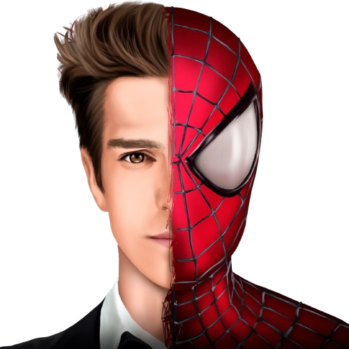

menyajikan tontonan yang sudah dinantikan para penggemar sejak lama, yaitu munculnya tiga Spider-Man sekaligus. Mereka adalah Spider-Man yang diperankan Tobey Maguire, Andrew Garfield dan Tom Holland. Meski berasal dari semesta berbeda, chemistry yang terjalin di antara ketiga orang itu di No Way Home, menjadi faktor menarik film ini.Tobey, Andrew, dan Tom masing-masing punya ciri khas dan gaya dalam memerankan superhero ikonik Marvel ini. Tobey adalah Spider-Man pertama yang tampil di layar lebar. Andrew adalah yang kedua. Sementara, Tom adalah yang ketiga dan jalannya masih panjang setelah Spider-Man bergabung ke Marvel Cinematic Universe (MCU). Meski penggambaran mereka terhadap Spider-Man berbeda-beda, tapi sifat karakter Peter Parker selalu konsisten di antara ketiga Spider-Man itu. Peter itu kutu buku dan suka sains. Lantas apa perbedaan mendasar antara ketiga Spider-Man itu? Mengutip Screen Rant, berikut ulasannya!
1. Tobey Maguire
Tobey Maguire memang bukan aktor pertama yang pernah memerankan Spider-Man dalam proyek live action. Namun, Maguire merupakan aktor pertama yang terlibat dalam proyek besar dari sang superhero. Soalnya. Maguire terlibat dalam proyek film layar lebar pertama dari sang Manusia Laba-laba yang telah disiapkan untuk menjadi sebuah trilogi dengan menggaet sutradara ternama, yaitu Sam Raimi.
Pada usianya yang telah menginjak 27 tahun saat membintangi film tersebut, Maguire sukses menghadirkan nuansa remaja kutu buku pada sosok Peter Parker. Maguire bahkan disebut-sebut sebagai pemeran Peter Parker terbaik dari seluruh aktor yang pernah memainkan alter ego dari sang superhero itu.
Pihak studio bahkan sebenarnya sudah memiliki rencana untuk menggarap film keempat dari Spidey versi Tobey Maguire dengan tetap menggandeng Sam Raimi sebagai sutradara. Sayangnya, rencana itu gagal akibat film Spider-Man 3 (2007) mendapatkan ulasan yang cukup buruk dan Raimi yang mundur dari kursi sutradara karena perbedaan pendapat dengan studio.
2 .Andrew Garfield
Setelah rencana film keempat Spidey versi Tobey Maguire gagal, Sony Pictures akhirnya me-reebot semesta perfilman dari sang Manusia Laba-laba. Mereka pun menggaet aktor baru buat berperan sebagai sang superhero, yaitu Andrew Garfield. Aktor kelahiran 1983 tersebut terlibat dalam duologi The Amazing Spider-Man garapan Marc Webb dari 2012 hingga 2014.
Ketika pertama kali memerankan sang superhero, Garfield telah menginjak usia 29 tahun. Meski begitu, Garfield tetap berhasil tampil sebagai remaja SMA yang punya kepribadian nyeleneh dan bahkan suka meledek musuhnya saat bertarung.
Garfield juga sebenarnya sempat akan memiliki film solo ketiganya sebagai superhero. Sayangnya, rencana tersebut lagi-lagi gagal karena ulasan film keduanya yang sangat buruk dan bahkan kini menjadi film Spider-Man dengan skor terendah. Namun, belum lama ini tersiar rumor kalau Sony dan Marvel berencana untuk menggarap film terbaru Spider-Man dengan Garfield sebagai pemeran utamanya.

3. Tom Holland
Setelah Andrew Garfield, ada Tom Holland yang menjadi pemeran dari sang Manusia Laba-laba. Holland pun menjadi aktor paling muda ketika pertama kali berperan sebagai sang superhero. Soalnya, ketika pertama kali muncul pada film Captain America: Civil War (2016), Holland baru menginjak usia 19 tahun sehingga masih terbilang cocok dengan karakternya yang dikisahkan berumur 15 tahun dalam filmnya.
Spidey versi Holland juga menjadi pertama kalinya sang Manusia Laba-laba tergabung dalam kelompok Avengers lewat penampilannya dalam film live action. Hal ini karena Spidey versi Holland eksis pada Marvel Cinematic Universe (MCU) yang merupakan semesta perfilman dari para Avengers.
Hingga artikel ini ditulis, Holland telah membintangi tiga film solo sebagai sang superhero, termasuk Spider-Man: No Way Home (2021). Namun, Holland sebenarnya sudah tampil sebanyak enam kali sebagai Spidey pada sejumlah proyek film MCU.